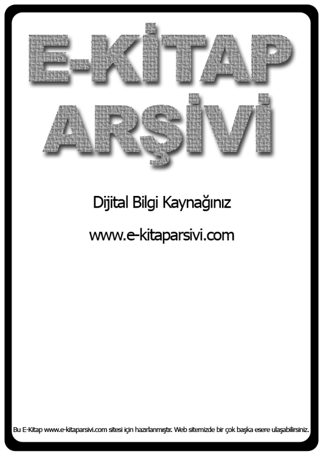

Ġlber Ortaylı _ Tarihin Sınırlarına Yolculuk
ĠLBER ORTAYLI ĠLE
Tarihin Sınırlarına Yolculuk
Ufuk Kitapları: 14 Tarih dizisi: 6 Ġstanbul 2001
Editör: Mustafa Armağan
Ufuk Kitapları bir da Yayıncılık ürünüdür. ISBN: 975-6571-03-9
Cumhuriyet Cad. No: 209/4-B 80230 Harbiye, Ġstanbul Tel: 0 (212) 232 17 51
ĠLBER ORTAYLI
1947 yılında doğdu. Siyasal Bilgiler Fakültesi (1968) ile Dil Tarih Coğrafya Fakültesi Tarih bölümünü bitirdi. Master çalıĢmasını Chicago Ûniversitesi'nde Prof. Halil Ġnalcık ile yaptı. "Tanzimat Sonrası Mahalli Ġdareler" adlı tezi ile doktor (1978), "Osmanlı Ġmparatorluğu'nda Alman Nüfuzu" adlı çalıĢmasıyla da doçent oldu. Viyana, Berlin, Paris, Princeton, Moskova, Roma, Münih, Strasbourg, Yanya, Sofya, Kiel, Cambridge, Oxford ve Tunus üniversitelerinde misafir öğretim üyeliği yaptı, seminerler ve konferanslar verdi. Yerli ve yabancı bilimsel dergilerde Osmanlı tarihinin 16., 19. yüzyılı ve Rusya tarihi ile ilgili makaleler yayınladı. 1989 yılından beri Siyasal Bilgiler Fakûltesi'nde tdare Tarihi Bilim Dalı BaĢkanı olarak görev yapmaktadır, llber Ortaylı, Uluslararası Osmanlı Etütleri Komitesi yönetim kurulu üyesi ve Avrupa Ġronoloji Cemiyeti üyesidir. YayınlanmıĢ Kitapları: Türkiye îdare Tarihi (1979), Hukuk ve Ġdare Adamı Olarak Kadı (1994), Ġmparatorluğun En Uzun Yüzyılı (1983), istanbul'dan Sayfalar (1986), Studies On Ottoman Transjormation (1994), Türkiye'de Belediyeciliğin Evrimi (ilhan Tekeli ile birlikte, 1978), Tanzimat'tan Sonra Mahalli Ġdareler (1974), Türkiye tdare Tarihine GiriĢ (1996), Alman Nüfuzunda Osmanlı Ġmparatorluğu (1980). Gelenekten Geleceğe (1982), Osmanlı Aile Yapısı (2000), Osmanlı Ġmparatorluğu Ġktisadi ve Sosyal DeğiĢim: makaleler 1 (2001).
llber Ortaylı'nm yayınlarımız arasında çıkan diğer kitapları: Gelenekten Geleceğe (2001), Osmanlı Mirasından Cumhuriyet Tûrfeiyesi'ne (Taha Akyol ile
birlikte, 2002).
ĠÇĠNDEKĠLER
SunuĢ / Mustafa
Armağan.........................................................................
....................................................6
Efsaneler ve sloganlar arasında bir
tarih...........................................................................